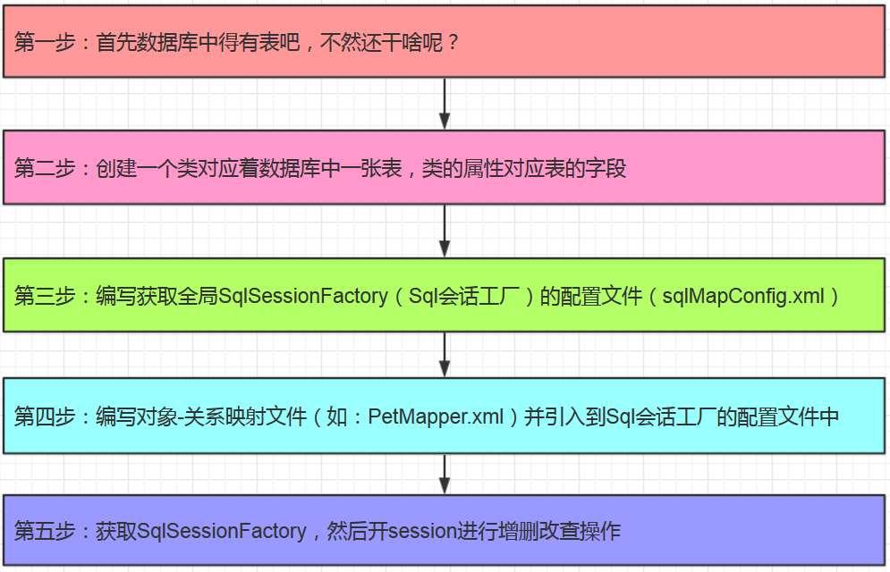

示意图

样例
前提准备：先建一个maven工程，并引入mybatis的核心依赖包和mysql的驱动包，如下所示：

第一步：首先数据库中得有表吧，不然还干啥呢？
第二步：创建一个类对应着数据库中一张表，类的属性对应表的字段
package com.pl.models;
import java.util.Date;
public class Pet {
private Integer id;//对应数据表PET的字段ID
private String petName;//对应数据表PET的字段PET_NAME
private Date birthday;//对应数据表PET的字段BIRTHDAY
private String addr;//对应数据表PET的字段ADDR
@Override
public String toString() {
return "Pet [id=" + id + ", petName=" + petName + ", birthday=" + birthday + ", addr=" + addr + "]";
}
}
第三步：编写获取全局SqlSessionFactory（Sql会话工厂）的配置文件（sqlMapConfig.xml）
<?xml version="1.0" encoding="UTF-8" ?>
<!DOCTYPE configuration
PUBLIC "-//mybatis.org//DTD Config 3.0//EN"
"http://mybatis.org/dtd/mybatis-3-config.dtd">
<configuration>
<environments default="development">
<environment id="development">
<transactionManager type="JDBC" />
<dataSource type="POOLED">
<property name="driver" value="com.mysql.jdbc.Driver" />
<property name="url" value="jdbc:mysql://172.18.5.25:3306/mybatis?characterEncoding=utf-8" />
<property name="username" value="root" />
<property name="password" value="382346819pl" />
</dataSource>
</environment>
</environments>
<mappers>
<mapper resource="com/pl/models/PetMapper.xml" />
</mappers>
</configuration>
第四步：编写对象-关系映射文件（如：PetMapper.xml）并引入到Sql会话工厂的配置文件中
<?xml version="1.0" encoding="UTF-8" ?>
<!DOCTYPE mapper
PUBLIC "-//mybatis.org//DTD Mapper 3.0//EN"
"http://mybatis.org/dtd/mybatis-3-mapper.dtd">
<!-- namespace：映射文件的命名空间，一般是映射文件所在的包名+映射文件名 -->
<mapper namespace="com.pl.models.PetMapper">
<!-- 用resultMap来指定类的属性与数据库字段一一对应的关系 -->
<resultMap type="com.pl.models.Pet" id="PetResultMap">
<id property="id" column="ID" />
<result property="petName" column="PET_NAME" />
<result property="birthday" column="BIRTHDAY" />
<result property="addr" column="ADDR" />
</resultMap>
<!-- 这里写的是sql语句 -->
<select id="selectPetById" parameterType="java.lang.Integer" resultMap="PetResultMap">
select * from PET where id = #{id}
</select>
</mapper>
第五步：获取SqlSessionFactory，然后开session进行增删改查操作
package com.pl.test;
import java.io.IOException;
import java.io.InputStream;
import org.apache.ibatis.io.Resources;
import org.apache.ibatis.session.SqlSession;
import org.apache.ibatis.session.SqlSessionFactory;
import org.apache.ibatis.session.SqlSessionFactoryBuilder;
import org.junit.Before;
import org.junit.Test;
import com.pl.models.Pet;
public class TestPet {
SqlSessionFactory sqlSessionFactory;
@Before
public void setUp() throws IOException {
InputStream in = Resources.getResourceAsStream("sqlMapConfig.xml");
sqlSessionFactory=new SqlSessionFactoryBuilder().build(in);
}
@Test
public void test() {
SqlSession session = sqlSessionFactory.openSession();
//session.selectOne(String arg0, Object arg1)方法传的第一个参数为mapper映射文件的namespace命名空间+sql语句的id号
Pet pet = session.selectOne("com.pl.models.PetMapper.selectPetById", 1);
System.out.println(pet);
}
}